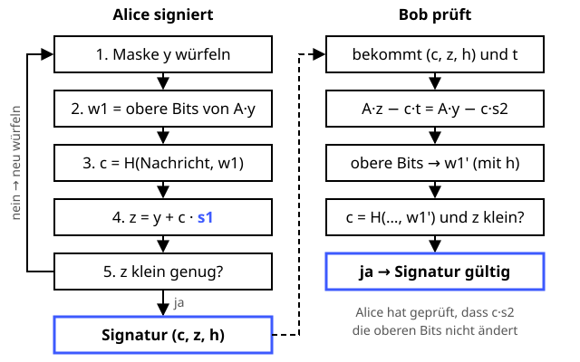

ML-DSA (Dilithium)
Unterschreiben mit Gittern – und so lange neu würfeln, bis nichts Geheimes durchschmeckt.
Definition
ML-DSA (Module-Lattice-Based Digital Signature Algorithm) ist seit August 2024 der NIST-Standard FIPS 204 und basiert auf CRYSTALS-Dilithium. Es ersetzt RSA- und ECDSA-Signaturen, die ein Quantencomputer brechen könnte. Das Prinzip heißt Fiat-Shamir with Aborts: Die Signatur enthält das Geheimnis, versteckt unter einer Zufallsmaske. Würde sie zu viel verraten, wird sie verworfen und neu berechnet.
Zutaten
- Ein Parametersatz: ML-DSA-44, -65 oder -87
- Eine öffentliche Matrix A
- Geheime kleine Vektoren s1 und s2
- Öffentlicher Schlüssel t = A · s1 + s2
- Die Hashfunktion SHAKE256
- Die Nachricht
Zubereitung
- Alice würfelt eine zufällige Maske y.
- Sie berechnet w = A · y und behält davon nur die oberen Bits w1.
- Aus Nachricht und w1 entsteht per Hash die Challenge c – ein Polynom mit wenigen Einträgen +1 und −1.
- Sie berechnet z = y + c · s1.
- Ist z zu groß, würde es etwas über s1 verraten oder würde c · s2 die oberen Bits verändern, verwirft sie alles und beginnt wieder bei Schritt 1. Im Schnitt braucht es nur wenige Versuche.
- Die Signatur besteht aus c, z und einem kleinen Hinweis h.
- Bob berechnet A · z − c · t, bildet daraus mit h die oberen Bits w1' und prüft, ob der Hash aus Nachricht und w1' wieder c ergibt und z klein ist.
Skizze

Bob kommt ohne s1 auf dieselben oberen Bits wie Alice, weil sich das Geheimnis beim Nachrechnen herauskürzt.
Skizze erstellt von Claude (KI)
Demo
Platzhalter für die Demo
Tipps
- Warum klappt die Prüfung? A · z − c · t = A · y + c · A · s1 − c · (A · s1 + s2) = A · y − c · s2. Weil c · s2 klein ist, ändern sich die oberen Bits fast nie – und Alice prüft beim Signieren, dass sie es wirklich nicht tun, sonst würfelt sie neu.
- Größer als ECDSA: Bei ML-DSA-65 hat der öffentliche Schlüssel 1952 Byte und die Signatur 3309 Byte, bei ECDSA (P-256) je etwa 64 Byte. In Zertifikatsketten macht sich das bemerkbar.
- Anders als bei ECDSA führt ein schlechter Zufall nicht zum Verlust des Schlüssels – es gibt sogar eine deterministische Variante ganz ohne Zufall.
- Signaturen sind weniger eilig als Verschlüsselung: Eine Signatur muss zum Zeitpunkt der Prüfung halten, man kann sie nicht heute speichern und später fälschen. Ausnahme sind langlebige Schlüssel, etwa für Root-Zertifikate oder Firmware-Signaturen.
- Alternativen: SLH-DSA setzt nur auf Hashfunktionen, FN-DSA (auf Basis von Falcon) hat kürzere Signaturen.